llm-context · visual guide
Overview · 8 pages
Diagram-only course
How llm-context processes natural-language code questions

The complete journey
01
Building the indexes
02
Planning the question
03
Hybrid retrieval
04
Qualifying evidence
05
Traversing the graph
06
Timeouts and speed
07
Answering and evaluation

The central idea
Next · Building the indexes →